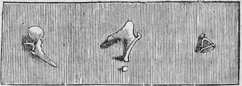
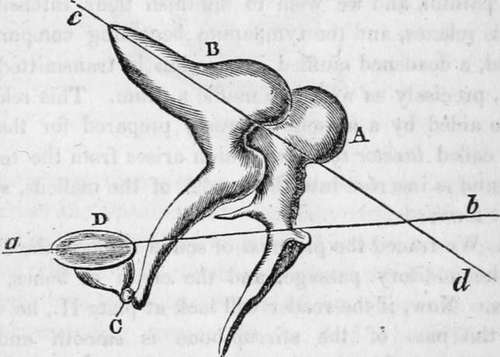

The Sense Of Hearing. Part 2
Description
This section is from the book "Human Physiology For The Use Of Elementary Schools", by Charles Alfred Lee. Also available from Amazon: Human Physiology, for the Use of Elementary Schools.
The Sense Of Hearing. Part 2
7 Eustachian Tube.-I have stated that this tube leads from the drum into the mouth, and serves for the introduction of air into the internal ear. The necessity of such a contrivance is obvious from the fact, that sounds cannot be transmitted through a vacuum, as is shown in the common ex periment of ringing a hell in an exhausted receiver, when no sound is made. So in a drum, there is an air hole, else the sound would be flat, and the head liable to be ruptured. When this tube is obstructed by the swelling of its lining membrane from cold, or the accumulation of secretion in the passage, deafness is the consequence. This passage is about an inch and a half in length, and widens from the ear to the throat like a trumpet. When deafness occurs from complete closure of this tube, hearing may be restored by perforating the membrane of the drum. We may ascertain with a good degree of certainty whether deafness arises from this cause, by placing a watch between the teeth, if its motions are audible, we may conclude that the essential organ of hearing is unaffected.
8. Bones Of The Ear
These are four in number, and are so connected with each other in the drum, that they serve to transmit vibrations of the membrane of the tympanum to the internal ear. From their shape, they are called the mallet, the anvil, the orbicular, and the stirrup bones, and are exhibited in nearly the natural size in the following cut.
Mallens, Incus, and Orbiculare, Stapes.
Fig. 3. Bones of the ear.
These bones are very hard and brittle, have no cartilage on their articular surfaces like other bones ; neither are they furnished with ligaments or synovia, but their dry and polished surfaces are accurately fitted to each other in the form of a bent lever ; and in this way, being connected and held together by the little muscles, by which they are moved and attached to each other, the intensity of vibration which they receive from the membrane of the drum is not blunted.
The handle of the mallet is attached to the membrane of the drum, and its other extremity rests on the anvil, which is connected with the orbicular bone, the smallest in the body, and not much larger than a grain of sand. This is interposed between the round bone and the stapes, whose base rests upon the membrane of the oval fenestra. Now the contraction of the muscles which eonnect these bones, puts the drum head on the stretch, and thus adapts it for the ready transmission of sound.
9. Mastoid Cells
These are seated in the hard portion of the temporal bone, and are also filled with air. The ear is thus surrounded with an atmosphere of its own. In the elephant, the two tables of the skull are separated from each other by a bony cellular structure to the extent of upwards of a foot, and these cells are filled with air which communicate with the drum of the ear. We find in the cat tribe, in dogs, and in gnawing animals, that there is a hollow sphere of very hard bone attached to the drum, shaped something like a conch, and well adapted for reflecting the vibrations of sound, and rendering them more intense, like the sounding board of a piano forte. A similar hard conch is found in the whale tribe. The two tables of the skull in birds are also widely separated, thus rendering them lighter, and as the cells communicate with the drum, doubtless for the purpose of increasing the volume of air for the reception of vibration.
10. Petrous Portion
The internal ear is situated in a portion of the temporal bone, called petrous, from petra, a rock, because of its solid structure. The object of this is evident from the fact, that hard elastic substances transmit vibrations of sound far better than matter of a softer texture. This portion of the temporal possesses indeed almost an ivory hardness, being the densest structure in the animal body, next to the enamel of the teeth ; and in this solid body the labyrinth of the ear is situated. Now in whales, the skeleton is formed of loose spongy bones, with a considerable quantity of oil, collected in their cells. To compensate for this soft structure, whales are furnished with a sounding board, or the dense conch, above mentioned. In fishes, we often find several of these little bony concretions, of a smooth and polished appearance, and hard and brittle as porcelain. These are often seen in cutting up boiled fish, when placed upon the table, but few are aware of the uses they serve in perfecting the organ of hearing.
11. In order, however, to understand the precise function of these bones, it will be necessary to examine a little more into their situation and connection. In the following plan, they are represented, greatly magnified, but each bone in its natural position.
A, the malleus, or mallet, with its long handle running down, to touch with its delicate extremity the membrane of the drum. B, is the incus, or anvil, nicely fitted to the mallet, and showing C, the orbicular bone placed between its termination, and D, the stirrup. The line a, b, represents the centre of motion of the malleus, and c, d, the centre of motion of the incus. Now this chain of bones acts on the principle of a long lever, as a small motion at one end of a long pole serve to move it through a wide space at the other. As Sir Charles Bell explains it, the head of the malleus is so articulated with the body of the incus, that the centre of motion of the incus is a line drawn through the centre of its body, and consequently the extremity of the long process, to which the orbicular and stirrup bones are attached, moves through a greater space than that which receives the impulse of the head of the malleus. Thus a very small degree of motion, communicated by the head of the malleus to the body of the incus, is greatly increased in the extremity of the long process of the incus ; and consequently this mechanism assists greatly in giving strength to the vibrations trans mitted to the internal ear.
Continue to:
Tags
humans, anatomy, skeleton, bones, physiology, organs, nerves, brain